고구마의 중요성
경제적 중요성
- 세계 7대 식용작물 및 우주 재배 식물
- 용도: 식용, 사료 및 공업용 전분 원료
- 높은 생산량(19 Ton/Ha) 및 농약·비료 저사용 작물
산업적 중요성
21세기 식량 및 환경 문제를 해결할 수 있는 잠재력을 가진 작물입니다.
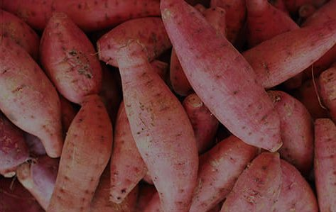
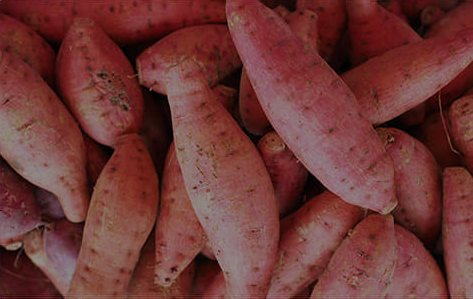
전파 경로
1763년(영조 39년), 조엄이 대마도에서 부산진으로 들여온 것이 한국 최초 도입입니다.
고구마는 어디에 쓰일까
생산량의 78%가 식용으로 소비되고, 전분용·가공용은 중국·인도네시아에서 수입합니다.
| 용도 | 수요량 | 공급량 (%) | 수입량 | 자급율 (%) |
|---|---|---|---|---|
| 식용 | 268 | 268 (78) | 0 | 100 |
| 전분용 | 30 | 7 (2) | 23 | 23 |
| 가공용 (음료·색소·제과·제빵용) | 48 | 41 (10) | 7 | 85 |
| 종저 및 기타 | 35 | 35 (10) | 0 | 100 |
| 계 | 381 | 351 (100) | 30 | 93 |
※ 생산량 및 수입량을 감안한 추정치 (고구마 당면 수입량 53,763톤 제외)
고구마는 정말 효율적인 작물입니다
| 작물 | 10a당 수량 (kg) | 100g당 열량 (cal) | ha당 생산 열량 (kcal) | ha당 부양가능인구 (인) | 열량단위당 가격 (원/kcal) |
|---|---|---|---|---|---|
| 쌀 | 451 | 359 | 16,190 | 17.7 | 415 |
| 보리 | 254 | 337 | 8,560 | 9.4 | 281 |
| 콩 | 178 | 410 | 7,298 | 8.0 | 332 |
| 고구마 | 2,238 | 113 | 25,300 | 27.7 | 91 |
| 감자 | 1,782 | 75 | 13,365 | 14.6 | 386 |
| 옥수수 | 630 | 355 | 22,365 | 24.5 | 129 |
에너지 생산력
단위면적(10a)당, 고구마를 100으로 본 지수
영양 성분
고구마는 괴근뿐 아니라 잎에도 루테인과 아미노산이 풍부합니다.
고구마 잎의 루테인
루테인(Lutein) 효능 — 심질환 예방, 피부의 자외선 보호, 안질환 예방
| 식물 | 루테인 (mg/100g) |
|---|---|
| 고구마 잎 | 12.9 ~ 42.6 |
| 케일 | 14.7 ~ 39.6 |
| 시금치 | 4.4 ~ 15.9 |
고구마 잎과 괴근의 아미노산 함량
| 작물 | 히스티딘 | 이소로이신 | 로이신 | 라이신 | 메티오닌+시스틴 | 페닐알라닌+티로신 | 트레오닌 | 트립토판 | 발린 |
|---|---|---|---|---|---|---|---|---|---|
| 고구마 괴근 | 1.7 | 4.4 | 6.0 | 4.0 | 2.5 | 6.9 | 4.4 | 1.4 | 5.9 |
| 감자 | 2.0 | 3.8 | 5.9 | 6.0 | 3.0 | 7.8 | 3.9 | 1.4 | 5.1 |
| 카사바 | 2.1 | 2.8 | 4.0 | 4.1 | 2.7 | 4.1 | 2.6 | 1.2 | 3.3 |
| 옥수수 | 2.7 | 3.7 | 12.5 | 2.7 | 3.5 | 8.7 | 3.6 | 0.7 | 4.9 |
| 백미 | 2.3 | 4.2 | 8.2 | 3.6 | 3.7 | 8.1 | 3.3 | 1.3 | 5.8 |
| 강낭콩 | 2.8 | 4.2 | 7.6 | 7.2 | 1.9 | 7.7 | 4.0 | 1.0 | 4.6 |
| 고구마 잎 | 3.4 | 4.8 | 8.1 | 3.8 | 2.9 | 7.8 | 4.5 | 0.8 | 9.1 |
| 시금치 | 2.5 | 4.8 | 9.5 | 7.3 | 3.7 | 11.2 | 5.3 | – | 6.1 |
고구마 괴근의 일반 성분과 식이섬유
| 구분 | 수분 (%) | 열량 (kcal/100) | 단백질 (g/100g) | 지방 (g/100g) | 탄수화물 (g/100g) | 총식이섬유 (g) | 수용성식이섬유 (g) |
|---|---|---|---|---|---|---|---|
| 고구마 괴근 | 84.1 | 43 | 3 | 0.6 | 10.6 | – | – |
| 감자 | 97.6 | 5 | 0.5 | 0.1 | 1.4 | 3.9 | – |
| 카사바 | 95.6 | 2 | 1.4 | 0.1 | 2 | 1.5 | 0.2 |
| 옥수수 | 93.4 | 3 | 2.1 | 0.1 | 3 | 1.8 | 0.2 |
| 백미 | 89.4 | 6 | 3.1 | 0.5 | 6 | 3.2 | 0.9 |
기능성 성분
고구마에는 여러 가지 유용한 성분이 함유되어 있습니다.
폴리페놀
Polyphenol- 카페산 (Caffeic acid)
- 클로로겐산 (Chlorogenic acid)
- 디카페오일퀴나산 (Dicaffeoylquinic acid)
- HIV·헤르페스 바이러스 증식저해작용, 항산화 효과, 암세포 억제작용
안토시아닌
Anthocyanin- Anthos(꽃) + Kianos(청)
- 꽃의 청색성분 (적색·자색·청색)
- 자연계 400종류 (19종 이상)
- 빛과 열에 대한 높은 안정성
- 건강기능성
베타카로틴
β-carotene- Provitamin A 활성
- 착색용도 – 마가린·유제품·사탕
- 생체방어(면역력) 증가
- 알츠하이머(치매)·암, 당뇨병·심질환
- 항산화 라디칼소거능
- 노인성황반변성증·백내장
안토시아닌 함유량
안토시아닌이 풍부한 작물: 포도 · 가지 · 블루베리 · 양파 · 자색고구마
| 식물명 | 함유량 (per 100g) |
|---|---|
| 자색고구마 | 2,000 ~ 2,200 mg |
| 크랜베리 | 60 ~ 170 mg |
| 포도 | 120 mg |
| 블랙커런트 (머루) | 250 ~ 600 mg |
| 엘더베리 (야생) | 450 ~ 600 mg |
| 아로니아 | 500 ~ 1,050 mg |
베타카로틴이 풍부한 작물: 당근 · 단호박 · 시금치
품종
자색·주황색 품종과 서울시립대 자체 육성 품종, 국내 품종을 소개합니다.
자색고구마 품종
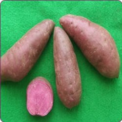
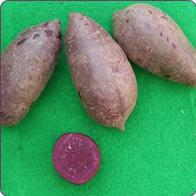
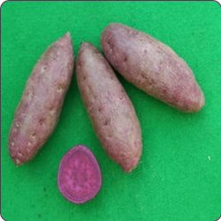
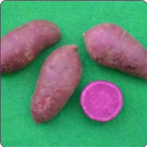
주황색고구마 품종
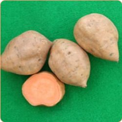
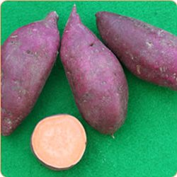
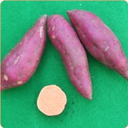
서울시립대 자체 육성 품종 12종
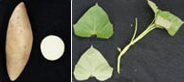
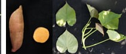
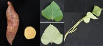
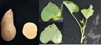
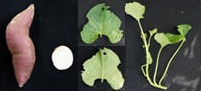
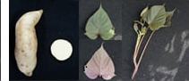
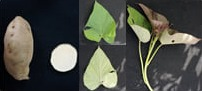
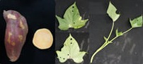
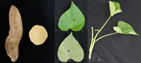
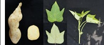
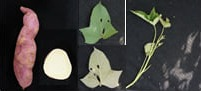
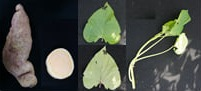
한국 품종 28종
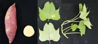
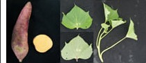
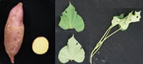
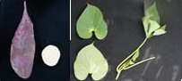
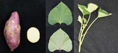
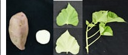
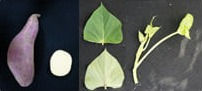
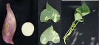
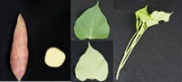
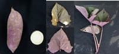
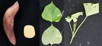
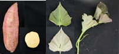
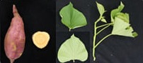
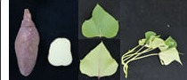
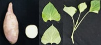
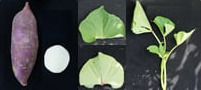
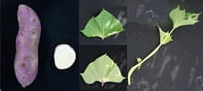
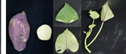
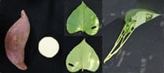
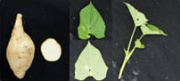
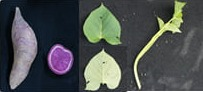
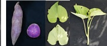
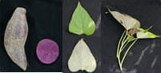
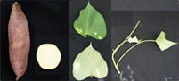
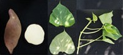
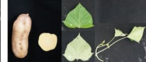
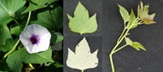
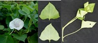
고구마 상식
힌트 — 당지질의 일종이며 열에 강하고, 완화제 작용을 해서 변비 예방에 좋습니다.
정답 보기
호박, 밤, 꿀 고구마는 있는 걸까요?
품종 특성에 따라 크게 호박·밤·꿀 고구마로 나누고 있지만, 국내에서는 정확한 품종에 따른 판매가 이루어지지 않고 있습니다. 서울시립대학교에서는 소비자의 입맛에 맞는 단일 품종 고구마를 선별하여 공급하고 있습니다.
판매되는 고구마는 한 품종일까요?
수도권 소재 대형마트에서 호박 고구마로 판매되는 고구마 10개를 RAPD로 분석한 결과, 10개의 괴근에 5개 품종이 혼재되어 있었습니다. 서울시립대학교에서는 한 품종의 고구마를 분자마커로 선발하여 공급·판매하고 있습니다.